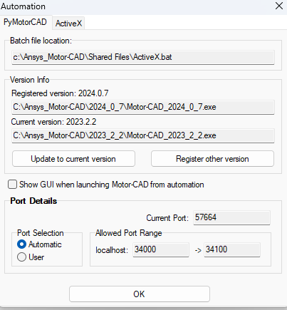
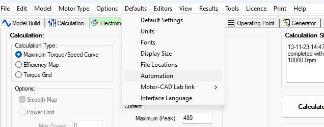

Troubleshooting#
Solutions for common PyMotorCAD issues:
The UI is not updated when a parameter is changed via automation#
When changing model parameters via automation, Motor-CAD does not update the user interface with the new parameter value at every step, to speed up the scripting. However, this means that you should never change a parameter which is shown on the currently displayed tab. Best practice is to view the Scripting tab when changing any parameters within Motor-CAD using the command:
mcApp.display_screen("scripting")
Error messages from Motor-CAD keep interrupting the script#
To turn off popups in Motor-CAD, use the command:
mcApp.set_variable("MessageDisplayState", 2)
This ensures that no dialogues are shown by Motor-CAD. Note that this turns off ‘crucial’ popups, for example: prompts to save data or overwrite data, or dialogues used to reconcile differences in material data between the database and .mot file. In each case the default action is taken. This setting persists until Motor-CAD is closed.
To get the contents of the messages, use the command:
num_messages = 100 # Specify number of messages to get
messages = mcApp.get_messages(num_messages)
The retrieved messages can then be parsed and used by the user.
Using a num_messages value of 0 retrieves all messages in history, as detailed in the method’s description.
To simplify future calls to get_messages(), it is useful to clear the message history after getting the messages,
by using the command:
mcApp.clear_message_log()
The wrong version of Motor-CAD launches#
Automation automatically launches whichever version of Motor-CAD is registered. Check the registration form to see which version is registered.
 {kind=link}
{kind=link}